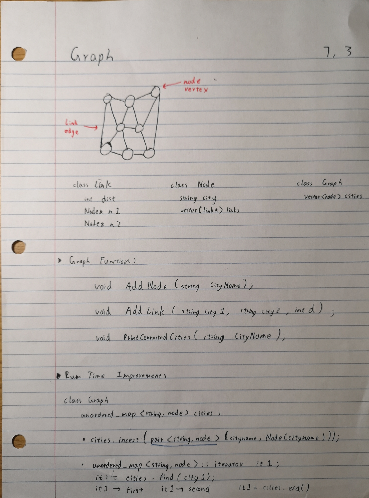

Week 7: Graphs
content, conten t
Link class
class Link {
public:
int distance;
Node* n1;
Node* n2;
Link( Node* a, Node* b, int d) : n1(a), n2(b), distance(d) {};
};
Node class
class Node {
public:
string city;
vector<Link*> links;
Node (string str) : city(str) {}
};
Graph class with vectors
class Graph {
private:
vector<Node> cities;
public:
Graph() {}
void AddNode(string cityname);
void AddLink(string city1, string city 2, int d);
void PrintConnectedCities(string cityname);
}
Graph functions
void AddNode(string cityname) {
cities.push_back(Node(cityname));
}
void AddLink(string city1, string city2, int d) {
//intiate index for cities in vector
int i1 = -1;
int i2 = -1;
//find the pos of the cities
for (int i = 0; i < cities.size(); i++) {
if(cities[i].city == city1) {
i1 = i;
}
if(cities[i].city == city2) {
i2 = i;
}
}
//if one is not found
if (i1 < 0 || i2 < 0) {
return;
}
//create a new link with two cities, add link to both cities
Link* LPTR = new Link(&(cities[i1]), &(cities[i2]), d);
cities[i1].links.push_back(LPTR);
cities[i2].links.push_back(LPTR);
}
void PrintConnectedCities(string cityname) {
/* example of wrong function
Node* c = nullptr;
for (auto elem : cities) {
if (elem.city == cityname) {
//does this save the address of the temp variable??
//or does it do the right thing?
//well, this is wrong, would be right if (auto &elem : cities)
c = &elem;
}
}
*/
//find the city with index
int ind = -1;
for (int i = 0; i < cities.size(); i++) {
if (cities[i].city == cityname) {
ind = i;
break;
}
}
//not found
if (ind < 0) return;
//if found, iterate through all the links
for (int i = 0; i < cities[ind].links.size(); i++) {
Link* lptr = cities[ind].links[i];
//find the link and print the other one
if (lptr->n1->city == cityname) {
cout << lptr->n2->city << endl;
} else {
cout << lptr->n1->city << endl;
}
}
}
};
Graph class with hashing
unordered_map<string, Node> cities;
void AddNode(string cityname) {
cities.insert(pair<string, Node>(cityname, Node(cityname)));
}
void AddLink(string city1, string city2, int d) {
//1. create new link on heap
//2. node a, node b, distance set
//3. add the link to both nodes' link vector
//use iterator to find
unordered_map<string, Node>::iterator it1;
it1 = cities.find(city1); //O(1), way faster than iterature through everything
//use iterator to find
unordered_map<string, Node>::iterator it2;
it2 = cities.find(city2); //O(1), way faster than iterature through everything
//if not found either
if (it1 == cities.end() || it2 == cities.end()) {
return;
}
//create a new link and add link to both node
Link* LPTR = new Link(&(it1->second), &(it2->second), d);
it1->second.links.push_back(LPTR);
it2->second.links.push_back(LPTR);
}
void PrintConnectedCities(string cityname) {
//use iterator to find
unordered_map<string, Node>::iterator it;
it = cities.find(cityname); //O(1), way faster than iterature through everything
//not found
if (it == cities.end()) return;
//iterature through the links to print
for (int i = 0; i < (*it).second.links.size(); i++) {
Link* lptr = (*it).second.links[i];
if (lptr->n1->city == cityname) {
cout << lptr->n2->city << endl;
} else {
cout << lptr->n1->city << endl;
}
}
}